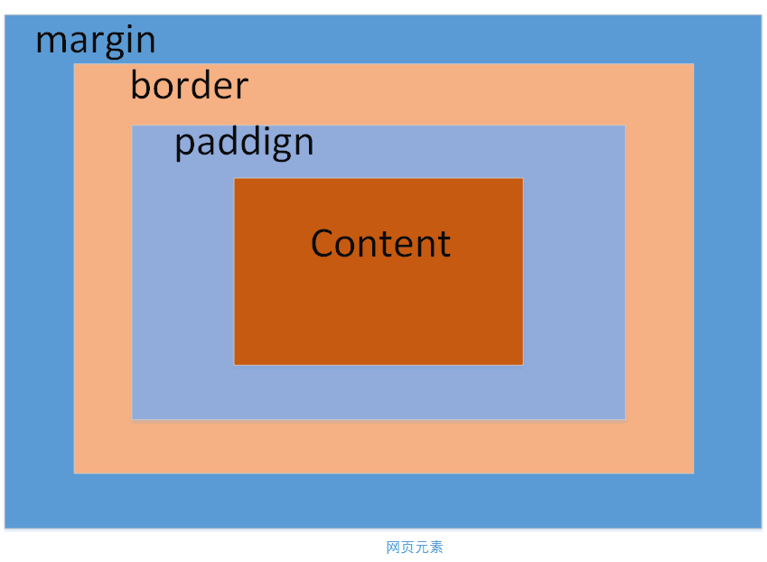
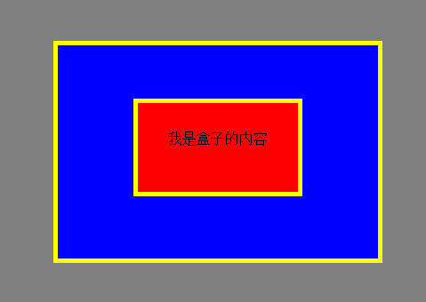

CSS盒子模型
刚开始接触web的时候是在大学的时候，写的第一个网页就是登陆页面，当时采用表格的布局方式，中规中矩的。接触到css之后，都是采用div+css的方式进行布局，实现了表现与结构的分离，非常的灵活。虽然早已经接触了css的布局方式，但是不经常使用，导致很多东西都已经忘记了。而最近又在捣鼓css的布局，就想在这里进行记录一下，就当做自己的学习笔记了。
css盒子模型是css中一个比较核心的概念。在网页中我们可以把所有的网页元素都看成是一个盒子，一个盒子包括外边距、边框、内边距，和内容四个部分组成的，如下图。

下面由外到内依次来解释这四个部分的作用。
- margin（外边距）：代表这个元素与其他元素的边距，需要说明的是，如果两个相邻的元素都设置了margin的值，那么以最大的那个值为准。如两个上下相邻的div，上面的div设置margin:30px，下面的div设置margin:50px，那么最后这两个元素的间隔不会是30+20=50px，而会是30px。
- border（边框）：代表这个网页元素的边框，边框可是设置大小、背景（颜色or图片）、样式（实现or虚线等）。
- padding（内边距）：代表元素内容和边框之间的距离。可以把它称作元素的留白。
- content（内容）：代表元素的内容区，如文本的大小。
其中，外边距、边框、内边距，都是可以应用元素的上下左右四个边，也可以应用于每个单独的边。尤其是外边距还可以设置为负值，在一些特殊的场合是需要用到外边距为负值的。
一般我们设置一个元素宽和高，一般是padding+content这块区域的宽和高，而不包括margin和border。
当我设置了元素的背景颜色，该背景只会应用到元素的边框以内的区域也就是padding+content，而margin和border区域的背景色是不会被改变的。
下面将演示一个实例。代码如下：
<html>
<head>
<meta charset="utf-8">
<style type="text/css">
body{
background:gray;
}
div{
height: 240px;
width: 360px;
border: 5px solid yellow;
background: blue;
margin: 50px auto;
}
span{
display:block;
margin:60px auto;
border:5px solid yellow;
width:180px;
height:100px;
text-align:center;
line-height:80px;
vertical-align: middle;
background-color:red;
}
</style>
</head>
<body>
<div>
<span>
我是盒子的内容
</span>
</div>
</body>
</html>效果如下：



【活动】优达学城正式发布“无人驾驶车工程师”课程
【推荐】融云发布 App 社交化白皮书 IM 提升活跃超 8 倍
【推荐】别再闷头写代码！找对工具，事半功倍，全能开发工具包用起来
【推荐】网易这个云产品做了15年才面世，1年吸引10万+开发者
· 除了《人类简史》，微信张小龙还读过哪些书？
· 华尔街疯狂追求程序员
· 这回轮到翻译们失业了，联合国推出了翻译专利的AI
· 360手机总裁发内部信：永远不会像有的品牌那样低配高价
· 李国庆反思当当：打了16年价格战，新电商的机会在哪里？
» 更多新闻...
· 技术的正宗与野路子
· 陈皓：什么是工程师文化？
· 没那么难，谈CSS的设计模式
· 程序猿媳妇儿注意事项